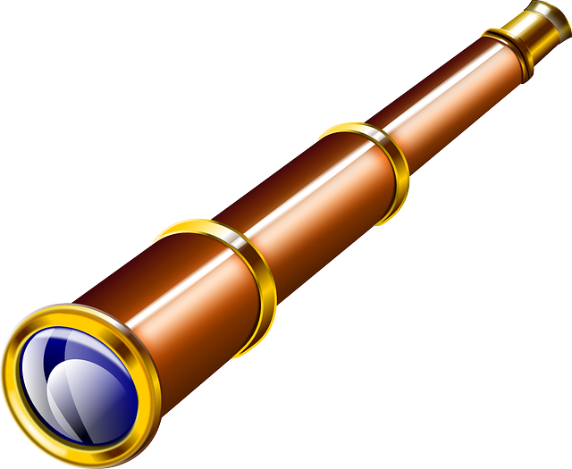

We believe security software like Whonix needs to remain Open Source and independent. Would you help sustain and grow the project? Learn more about our 14 year success story and maybe DONATE!
Tunnel UDP over TorDocumentationWhonix-Gateway Security HardeningPrevious page: Tunnel UDP over TorIndex page: DocumentationNext page: Whonix-Gateway Security Hardeningtor-ctrl-observer - Tor Connection Destination Viewer

Ever wanted to know which information is sent by an application? tor-ctrl-observer shows connection information of applications using Tor.
What tor-ctrl-observer is
Ever wanted to know which information is sent by an application?
tor-ctrl-observer shows connection information of
applications using Tor.
Sample printout:
250-stream-status=1094 SENTCONNECT 20 firefox.settings.services.mozilla.com:443
250-stream-status=1094 SUCCEEDED 20 18.64.79.82:443tor-ctrl-observer is especially useful in combination
with Whonix because:
All traffic originating from Whonix-Workstation™ and Whonix-Gateway™ is
routed to the Tor software.
For technical details, click on "Learn More" on the right side.
- Traffic from Whonix-Gateway also routed over Tor: Starting
from Whonix version
0.2.1, traffic from Whonix-Gateway is also routed over Tor. This approach conceals the use of Whonix from entities monitoring the network. - Gateway's own traffic not essential for anonymity: To preserve the anonymity of a user's Whonix-Workstation activities, it is not essential to route Whonix-Gateway's own traffic through Tor. (Note: The gateway is mainly a tool that helps route traffic; it does not typically contain personal activity data.)
- DNS configuration on Whonix-Gateway has limited impact:
Altering DNS settings on Whonix-Gateway in
/etc/resolv.confonly impacts DNS requests made by Whonix-Gateway's applications that utilize the system's default DNS resolver. (DNS is like the internet's phonebook - it translates website names to IP addresses.) By default, no applications on Whonix-Gateway that generate network traffic use this default resolver. All default applications on Whonix-Gateway that produce network traffic (like apt, systemcheck, sdwdate) are explicitly configured, or forced by uwt wrappers, to use their dedicated TorSocksPort(refer to Stream Isolation). - Whonix-Workstation DNS requests handled via Tor:
Whonix-Workstation's default applications are configured to use
dedicated Tor
SocksPorts(see Stream Isolation), avoiding the system's default DNS resolver. Any applications in Whonix-Workstation not set up for stream isolation - such asnslookup- will use the default DNS server configured in Whonix-Workstation (through/etc/network/interfaces), which points to Whonix-Gateway. These DNS requests are then redirected to Tor'sDnsPortby the Whonix-Gateway firewall. (This ensures DNS lookups still go through Tor even if they use the default method.) Changes in Whonix-Gateway's/etc/resolv.confdo not influence Whonix-Workstation's DNS queries. - Tor process traffic allowed direct internet access: Traffic
produced by the Tor process, which by Debian's default operates under
the account
debian-torand originates from Whonix-Gateway, can access the internet directly. This is permitted because the Linux user accountdebian-toris exempted in the Whonix-Gateway Firewall and allowed to use the "regular" internet. (This is necessary for Tor to establish its connections.) - Tor mostly uses TCP traffic: As of Tor version
0.4.5.6(with no changes announced at the time of writing), the Tor software predominantly relies on TCP traffic. (TCP is a common protocol used for stable internet connections.) For further details, see Tor wiki page, chapter UDP. For DNS, please refer to the next footnote. - Tor's DNS independence and exceptions: Tor does not depend
on, nor use, a functional (system) DNS for most of its operations. IP
addresses of Tor directory authorities are hardcoded in the Tor software
by Tor developers. (That means Tor knows important addresses in advance
and doesn't need to look them up.) Exceptions include:
- Proxy with domain name: Proxy settings that use proxies with domain names instead of IP addresses.
- Pluggable transport domain resolution: Some Tor pluggable
transports, such as meek lite, which resolve domains set in
url=andfront=to IP addresses, or snowflake's-front.
It operates in a secure manner by using Tor's control protocol, making visible the information that Tor internally processes and is already prepared to share with users upon request.
tor-ctrl-observer Advantages
- Application-level leak testing:
tor-ctrl-observercan be used to observe an application's network connections.- For example, Tor
Browser 11.0.4-11.0.6 phoning home (a regression of Firefox
phoning home during startup in Tor Browser based on ESR 68) was
identified and reported to The Tor Project by
tor-ctrl-observerdeveloper nyxnor.
- For example, Tor
Browser 11.0.4-11.0.6 phoning home (a regression of Firefox
phoning home during startup in Tor Browser based on ESR 68) was
identified and reported to The Tor Project by
Usage
In Whonix-Gateway™.
1. Open a terminal.
2. Run tor-ctrl-observer.
tor-ctrl-observer
3. Terminate tor-ctrl-observer with
signal SIGINT.
Press keyboard keys Ctrl + C.
What tor-ctrl-observer is not
tor-ctrl-observer does not attempt to be, is not, and
cannot be a:
- Network-level leak
test replacement:
tor-ctrl-observeronly requests connection information from Tor itself. While Tor generally provides this information, if there were bugs in the Tor control protocol,tor-ctrl-observerwould not detect them. Similarly, if connections bypass Tor, Tor is unaware of them, and thereforetor-ctrl-observercannot observe such connections. - Tor auditor: For the same reason as above,
tor-ctrl-observercannot be expected to identify bugs in Tor. - Tor Controller:
Unlike tools such as Nyx,
nyxprovides details on Tor circuits (Bridges, Tor Entry Guards, and middle or exit relays), but does not show final connection destinations. Conversely,tor-ctrl-observerdisplays information about final connection destinations.
Forum Discussion
Tor-ctrl-observer discussion on Whonix forums
See Also
Footnotes
Categories: Documentation